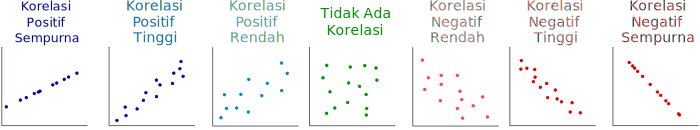

Diagram Pencar
Data Univariat vs Data Bivariat
Data univariat adalah sebutan untuk data yang hanya terdiri dari satu variabel numerik. Misalnya data jarak rumah peserta didik kelas X ke sekolah.
Data bivariat adalah sebutan untuk data numerik yang terdiri dari pasangan nilai. Pasangan dalam kumpulan data bivariat disebut variabel bebas dan variabel terikat .
Satu titik data dalam kumpulan data bivariat ditulis dinyatakan dalam sistem koordinat kartesius dengan koordinat \((x\,,\,y)\). Nilai \(x\) sebagai variabel bebas dan nilai \(y\) sebagai variabel terikat. Data bivariat ditampilkan secara grafis dengan memplot titik-titik data sesuai kordinatnya, dengan nilai variabel bebas pada sumbu horizontal dan nilai variabel terikat pada sumbu vertikal. Ini dikenal sebagai Diagram Pencar.
Pengertian Diagram Pencar
Diagram Pencar (Scatter Diagram/Scatter Plot) adalah diagram yang menunjukkan keragaman hubungan antara dua variabel \(x\) dan \(y\). Masing-masing unsur yang berhubungan digambarkan sebagai satu titik dalam sistem koordiniat Kartesius.
Deskripsi Diagram Pencar
Diagram Pencar dapat mendeskripsikan hubungan antar variabel yang mencakup:
Bentuk. Apakah asosiasinya linier atau nonlinier?
Arah. Apakah hubungannya positif atau negatif?
Kuat atau tidaknya keterkaitan. Apakah keterkaitannya tampak kuat, cukup kuat, atau lemah?
Pencilan. Apakah ada titik data yang sangat jauh dari pola umum?
Ketika dua kumpulan data (dua variabel) saling terkait erat, kita mengatakan keduanya memiliki Korelasi Tinggi.
Korelasinya Positif ketika nilai kedua variabel meningkat bersama-sama, dan
Korelasi bernilai Negatif jika salah satu nilai variabel meningkat seiring dengan penurunan nilai variabel lainnya.

Contoh
Para ilmuwan mencari hubungan antara jumlah jam tidur seseorang dan pengaruhnya terhadap keterampilan motoriknya. Beberapa subjek diminta untuk tidur dalam jangka waktu yang berbeda, dan semuanya diminta untuk menjalani tantangan mengemudi yang sama dimana waktu reaksi mereka diukur. Tabel tersebut menunjukkan hasil yang disajikan sebagai diagram pencar.
| Lama Tidur (jam) | Waktu Reaksi (detik) |
|---|---|
| 9 | 3 |
| 6 | 3,3 |
| 4 | 3,5 |
| 10 | 3 |
| 3 | 3,7 |
| 7 | 3,2 |
| 2 | 3,85 |
| 5 | 3.55 |
Waktu reaksi bergantung pada seberapa lama orang tersebut tidur. Jadi nilai pada sumbu horizontal mewakili jumlah jam tidur dan nilai pada sumbu vertikal mewakili waktu reaksi.
Berdasarkan data dan grafik di atas, jika jam tidur bertambah, maka waktu reaksi berkurang (turun). Jadi seiring bertambahnya jam tidur, waktu reaksi semakin berkurang.
Contoh diagram pencar ini menunjukkan bahwa hubungan antara waktu rekasi pengemudi dan seberapa lama yang bersangkutan tidur adalah: - Linear (bentuknya) - Kuat (hubungannya) - Negatif (arahnya), dan - Tidak ada pencilan, tidak tampak ada data yang jauh dari pola.
Perhatikan bahwa uraian tersebut menyebutkan bentuk (linier), arah (negatif), kekuatan (kuat), dan tidak adanya outlier . Disebutkan pula konteks kedua variabel yang dimaksud (usia pengemudi dan jumlah kecelakaan).
Latihan Soal
- Pilih diagram pencar yang paling sesuai dengan deskripsi berikut.
“Terdapat hubungan yang kuat, positif, dan linier antara kedua variabel tersebut.”
- Pilih diagram sebar yang paling sesuai dengan deskripsi berikut.
“Terdapat hubungan linier yang cukup kuat dan negatif antara kedua variabel dengan beberapa potensi pencilan.”
- Pilih diagram sebar yang paling sesuai dengan deskripsi berikut.
Ada hubungan yang kuat, negatif, dan nonlinier antara kedua variabel tersebut.
Ringkasan
Data univariat Data dengan hanya satu variabel Data bivariat Data terdiri dari pasangan terurut dua variabel Variabel bebas Variabel yang tidak ditentukan oleh variabel lain. Variabel tak bebas Variabel yang ditentukan oleh variabel lain. Titik data Pasangan terurut yang diambil dari kumpulan data, sebut pasangan terurut itu \((x,y)\) dengan \(x\) sebagai variabel bebas dan \(y\) sebagai variabel terikat. Diagram Pencar Visualisasi data bivariat sebagai pasangan terurut titik data